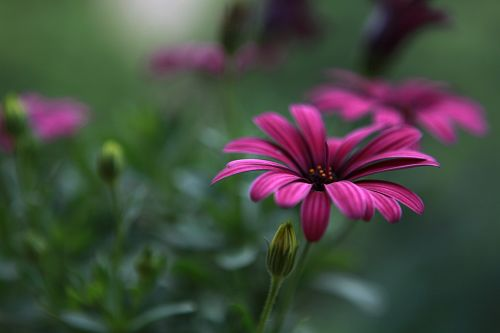
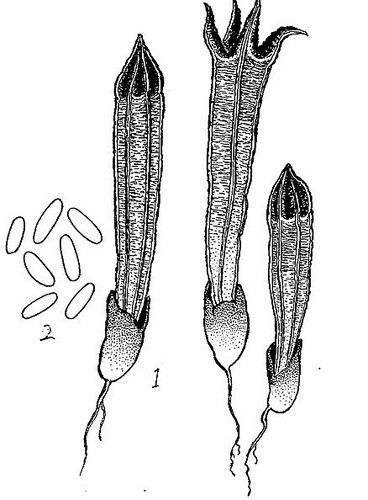

每天下班到家会去看看阳台上翻盆后的花草，走之前再去看一会儿，被如此有爱的眼神注视，植物们会不会生出更多的健康细胞呢？如今住房改善了，吃喝不愁，又有爱，改明儿分享些音乐给它们，娱乐一下。有实验证明，听不同曲风的庄稼，长势会不同。
解决了两盆栀子花的虫害，那些白色近乎透明的虫子在喷洒过药水后变成了棕色。叶子也没之前掉的那么厉害了。从山树那里了解到翻盆最好在清明前后，我是晚了些。旧土可以全用，我又额外添加了酸性土壤。浇透水，它们在5-8月间盛开，期待它们能如期开放。

我家阳台上盛开的非洲菊，又名扶郎花，原产非洲南部。

园子里年年5月肆意盛开的皇冠菊，一片片的开在阳光下非常好看。
本以为它们会在冬季的阳台上毫无悬念地成为植物标本。没想到泛黄的枝叶在春季渐渐变成浅绿深绿，它们居然苟延残喘的活着。。。为此挑了两只紫砂花盆给它们，重新添了土施了肥，大难不死必有后福，是这个道理吧。

我身后正是在宁杭高速两边引起扑土阵阵欢喜的粉色小花。

从昨晚等到现在才在问问那儿看到“五棱散尾鬼笔”图，肾上腺素没有增加，倒是胃跟视觉纠结了一秒。象是人们的毒舌，散落的孢子继续生出毒舌。。。这是在森林里吗？居然会遇到这么罕见的植物。

问问写到：号称鬼笔的几乎都是自然界的异类。在泥地下长大，窜出地面后，越伸越长，孢子破裂，散落人间，开始一轮又一轮的繁殖。我们遇见的这只鬼笔名为“五棱散尾鬼笔”。简直就是武侠小说使着怪笔当武器的神秘侠客江湖别称。五棱、散尾、鬼笔——字字形象。
据说今天去看尸体，已经神奇的消失了。最盛的时候，应该是触角还没有全部打开。孢子散去后，躯壳会迅速的萎下去。可能几个小时都不要。 用生命交换生命的延续？！我好奇这么臭的植物，狗狗们是何反应？

15 Responses to “那些花儿”
2010-05-19
最后一个是长春藤？
2010-05-19
对，拖下去好长的“头发”。
2010-05-19
哎呀，那是你家小区的么，美死老~~近照一个~
2010-05-19
不错啊,妙手回春,华佗再世~祝愿栀子花香飘万里.最好往西北方向吹~~~
2010-05-19
粉色小花我在家附近也看见了。。。准备去挖几朵带回家里种种看。。不知道是不是多年生的。。。花瓣薄薄的，单瓣的花大概都要薄如蝉翼才动人吧。
大难不死的常青藤看起来会发展的不错。茶，你可以适当把黄的剪掉一些，不那么密更容易长的油亮。这个应该不需要多晒太阳，每日见光就好。。。还有一种是带金边的常青藤，我家有，改日我送到扑土店里给你回家插。
2010-05-19
楼上的太友善了！我已经剪去一些枝叶，不舍得，会不会剪掉后不容易长那么长了呢？从没见过你，但记得我们在COSTA相遇过，什么时候去店里，我们约一下。你和你妈妈都是摄影爱好者，对吧？上过摄影培训班，好象还有个长长头发的女模特？要多教点技术给我哦~
也曾想过将粉色花朵移植一些到自家花盆里，下不了手~目前我适合养不金贵娇气的植物，练练手先，呵呵~
2010-05-19
有时候家里养植物，不要怕剪掉。。。剪掉为了让新的发的更快。而且我看你盆子里的新芽挺多的，可以吧老叶去掉。到了第2年，就需要换大盆或者分成两盆了，不然长不好。常青藤随时剪一条下来插土里，就能发新。
至于那种草花，阴雨天，连根带根周围的土一起挖了移植到花盆里，很容易成活。种好后浇透水阴干即可，开头几天不要猛晒太阳就好。其实别以为草花弱，它最坚强，有点土有点根系就长壮了。
2010-05-19
今天你穿的美哦，和初夏的蓝天相映美好。
这袜子也就你能穿出时髦感来，太拣人了。。
2010-05-19
那个扶郎花从照片看起来跟我家那个雏菊很像。扶郎的花芯应该比较大，是花篮上经常插的那种。莫非这个是别样品种的？
2010-05-20
花卉园的人告诉我是非洲菊，如果不是，会是什么花呢？
其实我的腿型不太适合这条镂空裤袜，找不到别的裤袜穿了，衣服都没整理：P
2010-05-20
衣服是ZARA的吧？
2010-05-20
不是ZARA的，是MUJI。
2010-05-20
茶家阳台的就是非洲菊/扶郎花，它的品种非常多，三百多个，shenwen提到的花篮里插的那种也是其中之一～～
2010-05-21
旗旗，谢谢你帮忙鉴定哦~塌实唠~
2010-05-27
我的绿萝已经养了两年，居然没死
爬山虎是冬天一枯藤，春天就发芽
Lysurus mokusin 有些臭，不过可以入食。有点臆怪
Leave A Reply
存档只读，评论已关闭。